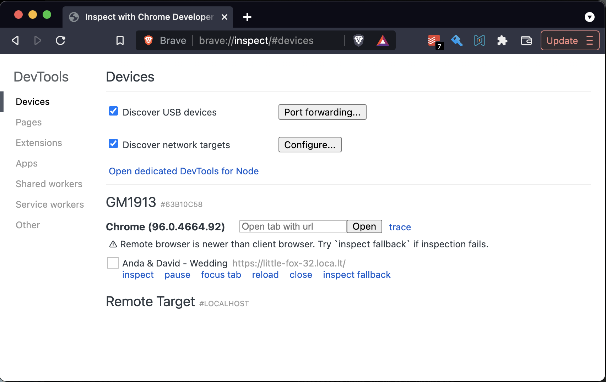
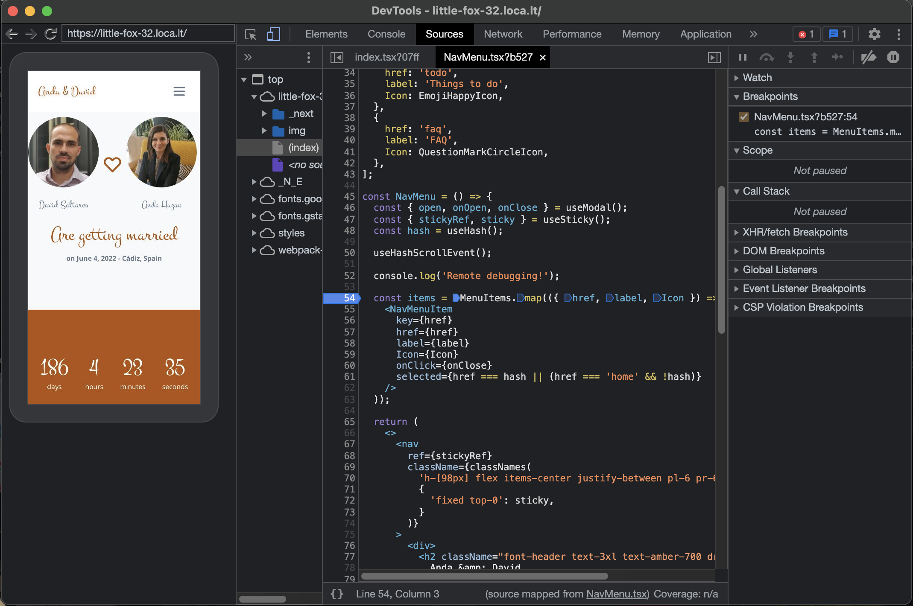
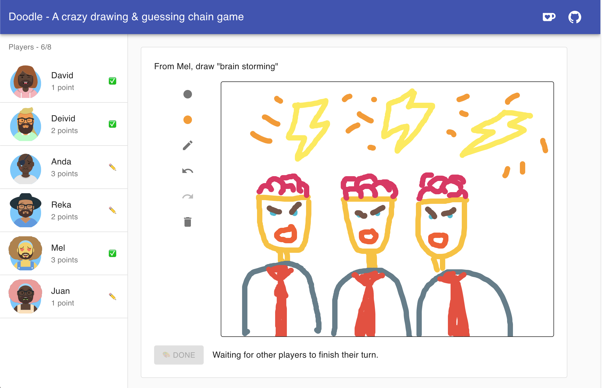

Dec 29, 2021 · 3 minute read · Comments
Development
When building cross-platform web application, you can mostly get away with working locally on your desktop browser. However, from time to time you may have to deal with a pesky bug that only happens on mobile.
The desktop browser device toolbar may not be enough to reproduce it. You may actually have to use a real device! However, you don’t want to have to publish your app to a public URL every time you want to test whether a given change fixes the problem. That would be a massive pain in the butt!
Fortunately there is a simple trick you can use to be able to quickly iterate and test on a real mobile device while keeping an awesome developer experience.
- 🏎️ Hot reload with instant feedback.
- 🖥️ Access to the console.
- 🐛 Full debugger with breakpoints, etc.
📱 Enable USB debugging
First, make sure USB debugging is enabled on your device.
- Go to
Settings -> About phone
- Tap the build number seven times.
- Enable USB debugging by going to
Settings -> Developer options -> USB Debugging.
Great, now you can connect your device to your development machine via USB. You should see a notification that USB debugging is enabled.
🚇 Tunnel localhost
Run your local development server. I am working on a Next.js app, so I can just run:
Your web app is probably now running on localhost, but your real device cannot connect directly. In order to access your local development server from a different device we can use localtunnel.
No need to install, you can use npx to run it directly. Make sure to tell it to tunnel to the port your local development server is using. In my case, that is 3000.
$ npx localtunnel --port 3000
localtunnel will give you a temporary URL that is accessible from anywhere in the world. In my case, I got https://little-fox-32.loca.lt. You can now open that URL in the device you want to test.
Be mindful that, running localtunnel will essentially expose your local app traffic to their public servers. Depending on what you are working on, that may be a show stopper. In any case, localtunnel is an open source tool, you could get a private server going if privacy is a concern.
🛰️ Remote Chrome inspector
Open your Chromium based browser and enter:
chrome://inspect/#devices
You should see a list of remote targets and the pages that are open in each target.

Clicking inspect on the one you want to debug will open the Chrome Developer Tools and connect to the remote browser.

You can now see the viewport, tap around and use tools like the console, debugger, etc. You can give the URL to a colleague and have them remotely help out too.
Hope this helps your workflow!
May 4, 2021 · 3 minute read · Comments
Leadership

So much goes into fostering an inclusive remote culture. It must be done deliberately, like tending to a greenhouse.
As an Engineering leader, I am committed to creating a safe environment in my team where everyone feels included.
One aspect of remote work, where lack of inclusion can really alienate your team, is meetings. So here are 6 tips on how to make them a bit more inclusive.
1. ✍️ Default to async
Async communication acts as a leveller. It’s no longer about who talks first or loudest. When someone lays out a great proposal in writing, seniority starts to matter less.
Do you really need a meeting? Consider an async discussion on a Google doc, Notion page or Github RFC issue.
Aula, Gitlab and many other remote-first companies already encourage this.
2. 📆 Respect people’s calendars
When setting up a meeting, check the attendees' calendar first and do not create the event if there is a clash, at least without asking first.
At Aula, we encourage everyone to be explicit and use Google Calendar as a communication tool by explicitly setting time for things like:
- 🕰️ Working hours
- 🥘 Lunch time
- 🏫 School run
- 🤸♂️ Workout
- ❌ … Any unavailable time.
Respecting people’s calendars is respecting their time and making them feel included. You’re basically saying that it doesn’t matter that they care for a dependent relative or live in a different timezone. They are an important part of the session.
If making calendars work is hell 🔥, default to async!
3. 📝 Send agenda well in advance
Not only will your meetings be much more productive, they will also allow more introverted folks, like myself, to prepare and participate more. We will thank you!
A meeting invite without an agenda can be extremely anxiety inducing. During those meetings, it’s usually the red people who dominate the conversation. When that happens, you may be missing out on extremely valuable points of view.
4. 👀 Observe and pick up on cues
Picking up on certain dynamics during a remote video call can be more challenging than in person although it is just as important.
💬 Is someone dominating the conversation? Interject and give space for other voices. If it keeps happening, give them candid feedback 1-1.
🙋♀️ Did someone unmute and then muted on the video call? Maybe they wanted to participate but did not get the chance. Politely ask if they wanted to say something. Lots of video tools have a “raise hand” feature these days. Pay attention to raised hands.
🤐 Did someone not participate at all? You could ask if they want to add something. However, be mindful as not everyone may want to be put on the spot. The best is to check with them 1-1 whether that’s something they would appreciate.
5. 👑 Rotate moderators
Depending on the scope of the meeting, it may be beneficial to rotate the moderator and let members of your team own the session.
Decisions made during these meetings will automatically get more buy-in and your team will develop.
6. ✋ Lead by asking the “silly questions”
It’s easy to try encourage your team by saying “there are no silly questions”. Sure, this is nice but folks can still be intimidated and may dread judgement from their peers.
We can do better.
Lead by example and be vulnerable by sharing what you don’t know or are unsure about. Vulnerability builds trust.
🙌 Thanks
You made it!
Any good tips to make your remote meetings more inclusive?
May 2, 2021 · 2 minute read · Comments
General
Back in 2020, I migrated this blog to Hugo and Github pages. I also set up a “push to publish” CD pipeline with Github pages.
Happy days.
🤔 A couple of days ago I wondered if there was a low effort way to schedule posts. That way, I could easily bulk some writing together and publish it later on without having to come back to it.
It’s actually trivial to set up!
Simply add a schedule trigger to your Github Action like so:
name: Build and deploy
on:
push:
branches:
- master
schedule:
- cron: '0 0 * * *' # Once per day at midnight
jobs:
build:
runs-on: ubuntu-latest
steps:
- name: Checkout
uses: actions/checkout@v1
- name: Setup Hugo
uses: peaceiris/actions-hugo@v2
- name: Build
run: hugo
- name: Deploy
uses: peaceiris/actions-gh-pages@v2
env:
EXTERNAL_REPOSITORY: dsaltares/dsaltares.github.io
ACTIONS_DEPLOY_KEY: ${{ secrets.ACTIONS_DEPLOY_KEY }}
PUBLISH_BRANCH: master
PUBLISH_DIR: ./public
Now you can push posts that will be published into the future by setting the front matter date.
date: 3059-05-01T00:00:00+00:00
That could be a post for future generations 😅.
When hugo runs, it does not generate HTML for posts with dates in the future. However, our Github Action runs every day at midnight. This means that the run for May 1st 3059 will actually generate the HTML for our scheduled post and publish it 🙌.
📆 This post itself was scheduled!
Apr 26, 2021 · 6 minute read · Comments
Leadership
Hiring engineers is top of mind for any engineering leader, this year at Aula it is the same for me. As VP Engineering I have the daunting task of tripling the size of our Engineering team. Happy to say we are well on track, in the last 8 weeks we have successfully hired 8 wonderful engineers and more than doubled our size!
I wrote this post for other engineering leaders who’ve just been given the opportunity to rapidly grow their organisations.
Where does one even start?
💜 Context
At Aula, we’re building the Learning Experience Platform for higher education.
Aula took the decision to grow its Engineering and Product organisation at the beginning of 2021. We’re building the features that will make educators fall in love with our platform and enable them to create engaging learning experiences for their students.
Check out our platform vision to learn more about what we are building.
Not only do we want to grow fast but we want to ensure that we are focusing on building a high performing, diverse and inclusive team.
We thought as many engineering leaders are facing the same challenges we should share what we have learned along the way to help you do it too. And of course, if you want to come and join us in this adventure, we are still hiring.
🔝 Prioritise hiring
Giving my team the capacity to achieve our goals was the best way I could help, so I made hiring my number 1 priority.
Not having a huge Recruitment team meant I had to get stuck into the process of recruitment myself.
Look at your calendar, if at least 50% of your time is not spent on hiring related activities, hiring is not your top priority and you need to fix it. Prioritising hiring will mean saying no to other things.
My recommendation here is to roll up your sleeves and jump into your ATS. Being hands on in recruitment will help you understand the candidates attracted to your organisation, refine the recruiting process and ensure that everything is kept moving forward. I spend 30 minutes every morning checking CV’s, looking at interview feedback and ensuring that I know exactly what is happening in my recruitment pipeline.
Uncomfortably focused is one of our virtues here at Aula. I know that the team has suffered in the short term because I haven’t been able to spend as much time as I would have liked supporting them. However in the long run, bringing in new team members to support what we are building has led to everyone being happier.
💬 Get ready to talk to a lot of people
Recruiting is a people game, doing this successfully means you’re about to meet a lot of new people.
One of the most important things is to make the time to do that. If you want your business to start growing, then this is the first thing you should do is make sure you are ok with the idea that hiring starts with conversations.
In the first quarter of 2021, we had more than 1100 people enter the top of our recruiting funnel and spoke with more than 200 engineers who could potentially fit the job.
I send messages on LinkedIn, emails to potential candidates and ask friends in my network for help.
This can be tremendously draining for an introvert such as myself. Well, it may be draining for just about anyone! Make sure to take breaks and rest well.
♻️ Standardise the process
Standardising your hiring process is one of the most high leverage things you can do.
Create wiki pages where you list the questions and problems for each stage of the process. Detail what the team wants to learn from the candidate with each question and what a poor/ok/great answer could look like. Create scorecards for each stage every interviewer will fill in.
Ask every candidate the exact same questions.
This will benefit you in at least three ways:
⚖️ Consistency allows you to get better insights, compare and evaluate candidates much more easily.
📚 A documented process will help team members with little interviewer experience get trained.
🤔 Standardised interviews will reduce the biases of the process. To minimise bias, you should also have two interviewers at each stage.
🤝 Build great relationships with your recruiters
There is no way you will double the size of your team alone. Having a top notch recruitment team is essential.
Make sure your whole team understands the profile you’re looking for and why they would join your company. The recruiters you are working with are an extension of your voice in the market and will be pitching candidates.
We do engineering hiring standups 3 times a week, run retrospectives every month, constantly give each other feedback and document everything.
✍️ Build great content
In order for your jobs to stand out, you need to tell a story. From the job ad to all your interactions with candidates through the process. You will have to raise awareness about what you’re all about and tell this story a thousand times.
The best way is to write it or film it and put it out there!
At Aula, we have built great pieces of content that continue to help us through this journey:
Language matters. Make sure you avoid gender bias from your content as much as possible. I recommend you run your content through an analyser such as Gender Decoder.
⚙️ Automate as much as possible
There will be an enormous amount of repetitive work. It’s best to automate as much of it up front.
A lot of our interview scheduling is done through Calendly. So much email back and forth has been avoided by this!
Every time a candidate is moved through the pipeline, our ATS automatically sends emails and assigns tasks for the next steps. This saves time but also lifts a huge mental burden.
Don’t remove the human element from the process, especially when it comes to giving feedback. Candidates invest valuable time interviewing with you. Anyone who is rejected deserves a customised message with specific feedback.
📆 Pre-book interview slots
The engineers in your team will have to do a ton of interviews. This takes a lot of time and focus from sprint work. It’s not just the interview slot but the prior prep and evaluation that comes after as well.
Context switching can kill productivity and increase stress.
To help engineers focus, have pre-booked weekly interview slots. Predictability will facilitate better time management.
🔍 Track everything & iterate
Use the data to make better decisions and set targets.
Track everything. Measure your data and analyse it to make better decisions that can help you optimise to achieve your goals. Data can help you make changes to attract more applicants, avoid losing candidates or screen better and save engineering interviewer time.
🙌 That’s it!
Really keen to hear if you think I missed anything important and let me know if you found this useful.
There’s so much more that could be covered!
- 🏫 Interviewer training
- 👩🎓 Onboarding
- 🚀 And more!
Good luck!
May 17, 2020 · 1 minute read · Comments
Games Development
✏️ Introducing Doodle, a crazy drawing & guessing chain game. Think Pictionary meets Telephone. Better played with your friends over a video call!

🏠 Doodle is a little side project I made during covid-19 confinement to play with friends while we cannot meet face to face. Initially, I thought the crisis would end before I finished it, which would make me lose interest. Little did I know! Not only did I finish it, Doodle has already lightened up the mood in a few remote evenings.
💻 The game is entirely written in Typescript, which I had never used before. I’ve had lots of fun building it, getting feedback and playing with friends. I hope to soon post a more detailed post-mortem on the whole process. Maybe even a couple of articles about things I learned.
🤓 In the meantime, you can check out the source code on Github.
🙌 Give it a try and be sure to let me know any thoughts or feedback!

{kind=link}